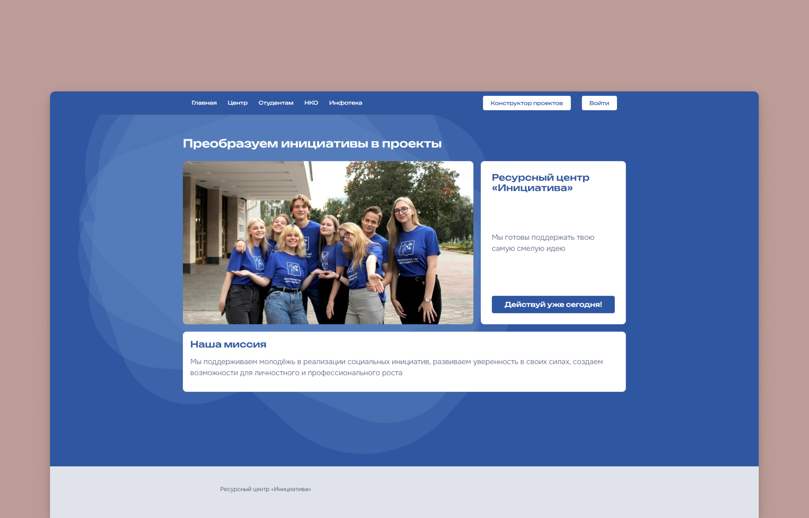
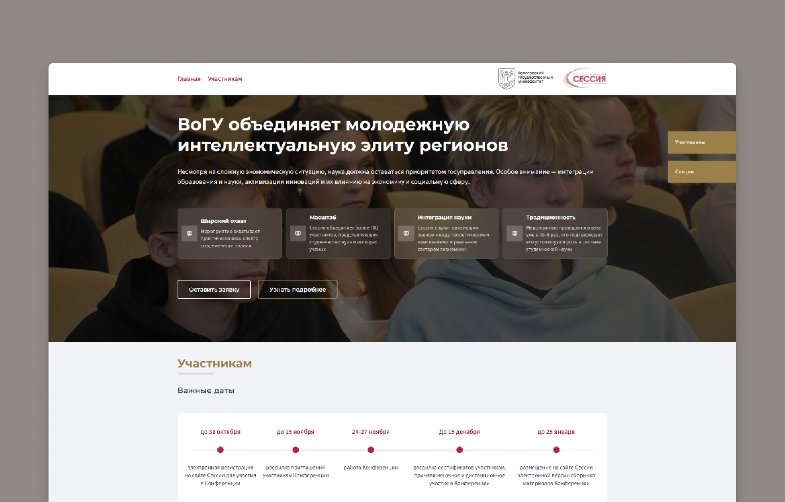
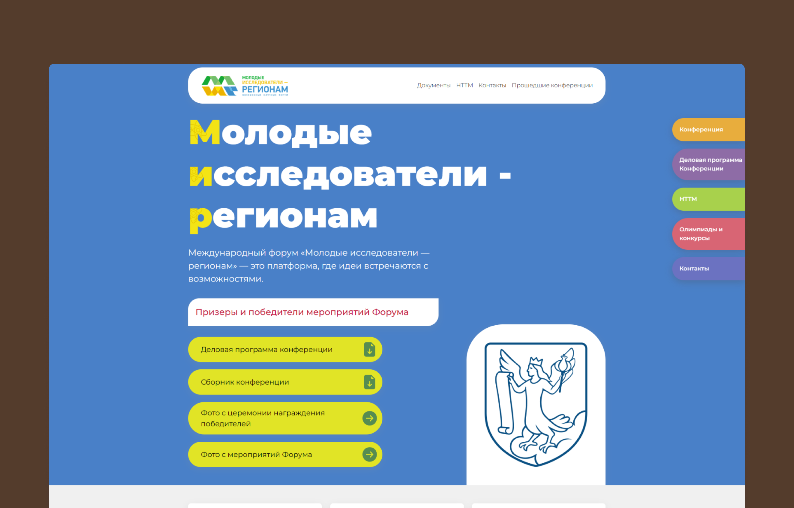
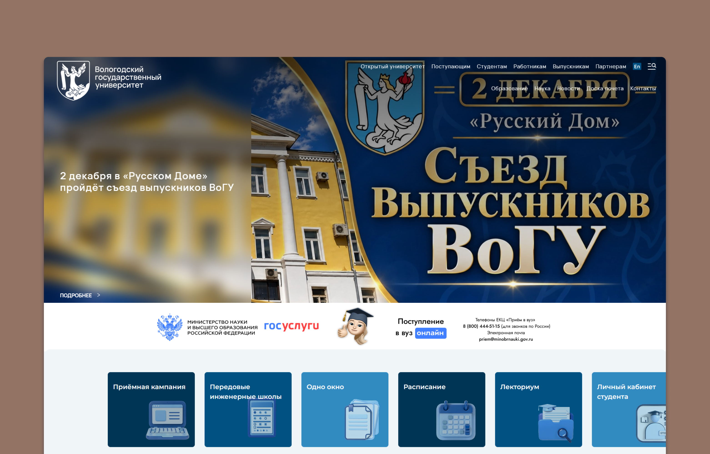
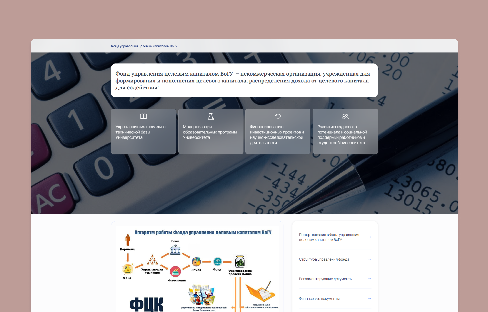
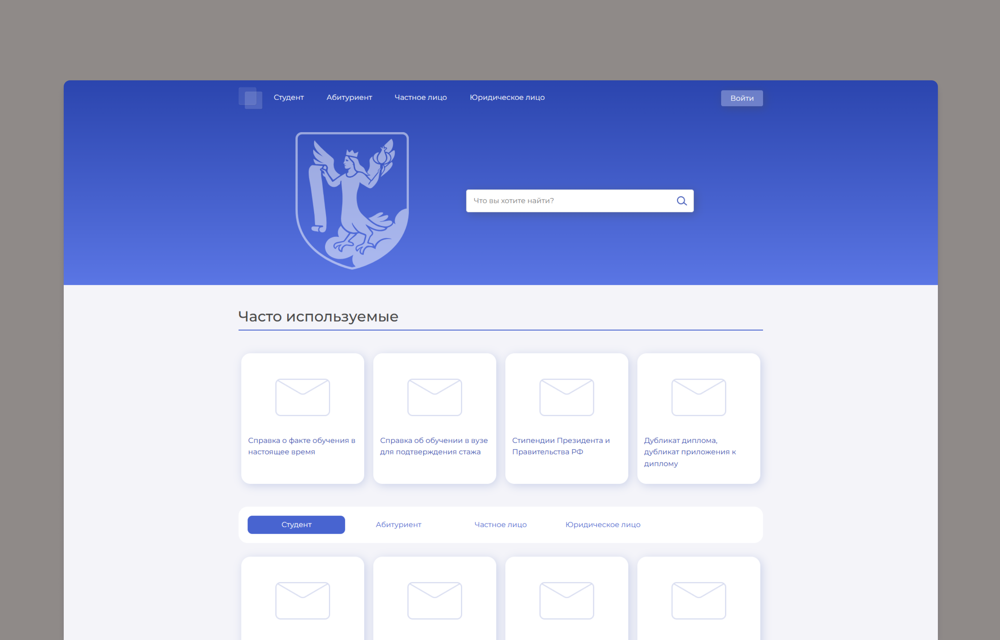

Мои проекты

Щукин Денис Викторович — судебный юрист по арбитражным и гражданским спорам
Персональный сайт судебного юриста Щукина Дениса Викторовича, специализирующегося на арбитражных и гражданских спорах, банкротстве, досудебном урегулировании и абонентском юридическом обслуживании. На сайте представлены услуги, примеры успешных дел, преимущества работы с юристом и контактная информация.

Ресурсный центр «Инициатива» — превращаем идеи в социальные проекты
Сайт ресурсного центра «Инициатива» — платформа для поддержки молодёжных социальных инициатив. Здесь можно найти обучение, тренинги, онлайн-курсы, готовые проекты, инфотеку с чек-листами и инфографикой, а также истории успеха. Центр помогает превращать идеи в реальные проекты и развивает гражданскую активность.

Научная сессия ВоГУ — конференция для молодых учёных и студентов
Сайт посвящён научной конференции ВоГУ — сессии, которая объединяет студентов, магистрантов, аспирантов и молодых учёных до 35 лет. Здесь публикуются правила участия, требования к тезисам, важные даты, список научных секций и информация для участников.

Форум «Молодые исследователи — регионам» — конференция и выставка НТТМ
Сайт международного форума «Молодые исследователи — регионам» (ВоГУ). Здесь собрана информация о конференции: список секций с адресами, временем и руководителями, деловая программа, выставка НТТМ, конкурсы и олимпиады, важные даты, документы и контакты оргкомитета.

ВоГУ — официальный сайт Вологодского государственного университета
Официальный сайт Вологодского государственного университета (ВоГУ). Здесь собраны разделы для поступающих, студентов, сотрудников, выпускников и партнёров: образование, наука, новости, расписание, личный кабинет, приёмная кампания, контакты и сведения об образовательной организации.

Фонд целевого капитала ВоГУ — поддержка образования, науки и студентов
Сайт Фонда управления целевым капиталом ВоГУ — некоммерческой организации, созданной для формирования целевого капитала и направления дохода на развитие университета: укрепление материально-технической базы, модернизацию образовательных программ, финансирование научных проектов и поддержку студентов и сотрудников. Здесь можно сделать пожертвование, ознакомиться со структурой управления фонда, регламентирующими, финансовыми и отчётными документами, а также найти контакты.

Сервисы ВоГУ — справки и услуги для студентов, абитуриентов и организаций
Это сервисный портал (раздел сайта ВоГУ) для студентов, абитуриентов, частных лиц и организаций. Здесь можно найти часто запрашиваемые услуги и справки: подтверждение факта обучения, справки для стажа, дубликаты диплома и студенческого билета, информацию о стипендиях, а также задать вопрос техподдержке.